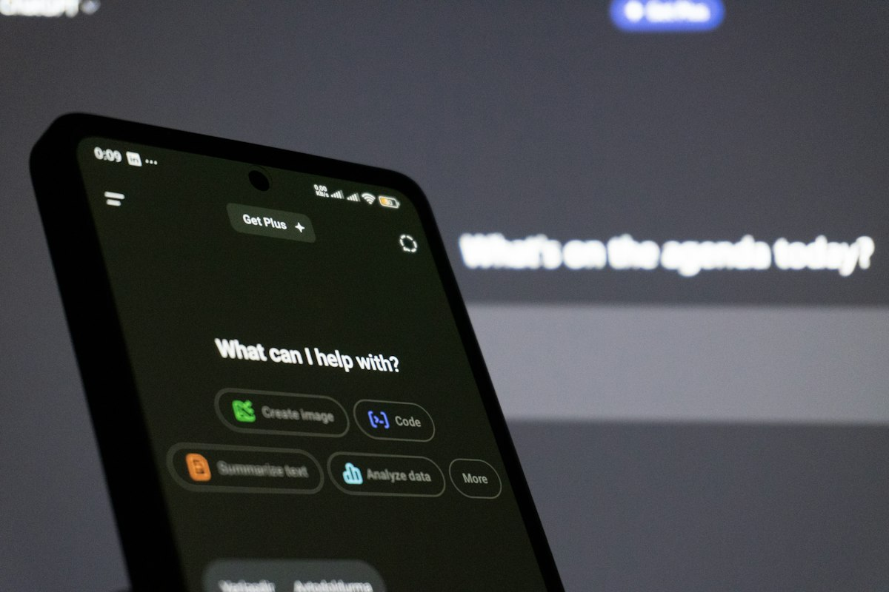

Build and Scale AI Solutions with Dedicated Engineering Talent
Hire skilled AI engineers from PineSucceed Technologies Pvt Ltd to design, develop, integrate, deploy, and improve artificial intelligence solutions for your business.
Our AI engineers work as an extension of your team, bringing practical experience in generative AI, machine learning, AI agents, data pipelines, cloud platforms, APIs, and production software development.
Our Capabilities
AI Engineers You Can Hire
Specialists for every part of your AI product, from models and agents to data and deployment.
Explore AI engineer roles
01 /
Generative AI
Generative AI Engineers
Hire generative AI engineers to build intelligent applications using large language models, multimodal models, structured prompts, business knowledge, and secure application integrations.
Our generative AI engineers can help with
LLM-powered application development
Generative AI assistants and copilots
Content generation and transformation
Structured data extraction
Model and API integration
Prompt and context engineering
Output quality and guardrail implementation

The Outcome
Build Your AI Team with PineSucceed
Dedicated AI Engineering Talent
Add experienced AI engineers to your team without the delay and overhead of a long internal recruitment cycle. Our engineers collaborate with your stakeholders, product managers, designers, developers, and technical leaders.
With PineSucceed, you get:
Engineers matched to your technical requirements
Flexible engagement and team scaling
Direct communication and transparent delivery
Support from broader AI and software specialists
Secure development practices
A practical focus on production-ready outcomes
Business-First AI Engineering
Our engineers focus on the business workflow and user need before selecting a model or technology. This keeps development relevant, measurable, and aligned with your product strategy.
Key questions we help answer
Which AI approach best fits the use case?
What data and integrations are required?
Which model or platform should be used?
How should the solution be evaluated?
What security and privacy controls are needed?
How will AI outputs be reviewed and monitored?
How should the solution scale in production?
Our Approach
Our AI Engineer Hiring Process
From understanding your requirements to onboarding engineers and scaling the team as your project grows.
Step 01
Requirement Discovery
Understand your project, stack, and required skills.
Step 01 / 07
Requirement Discovery
We begin by understanding your product, project scope, technology stack, business goals, required skills, expected responsibilities, delivery model, and timeline.
Key activities:
Project and product discussion
Technical requirement analysis
Role and responsibility definition
Skill and seniority mapping
Team structure review
Engagement model selection
Success criteria definition
Step 02
Engineer Matching
Find engineers whose skills fit your project.
Step 02 / 07
Engineer Matching
PineSucceed identifies engineers whose experience and technical skills align with your project requirements.
Matching criteria include:
AI and machine learning capabilities
Relevant model and platform experience
Programming and software engineering skills
Cloud and deployment knowledge
Integration experience
Industry or use-case familiarity
Communication and collaboration requirements
Step 03
Profile Review and Technical Discussion
Review profiles and talk to engineers before you decide.
Step 03 / 07
Profile Review and Technical Discussion
You review the proposed engineer profiles and can conduct technical or project discussions to evaluate suitability for your team.
The review may cover:
Technical background
Relevant project experience
Problem-solving approach
Architecture and implementation knowledge
Communication style
Availability and engagement expectations
Project-specific questions
Step 04
Onboarding and Environment Setup
Align the engineer with your tools, access, and process.
Step 04 / 07
Onboarding and Environment Setup
After selection, we align the engineer with your development process, communication channels, repositories, documentation, security policies, and delivery expectations.
Onboarding activities include:
Project and domain orientation
Access and environment setup
Repository and documentation review
Workflow and tool alignment
Security and confidentiality briefing
Initial milestone planning
Communication and reporting setup
Step 05
Development and Collaboration
Build, test, and integrate features with your team.
Step 05 / 07
Development and Collaboration
The engineer works with your team to design, build, test, integrate, document, and improve the assigned AI solution or product features.
Delivery activities include:
Sprint and task execution
Technical design and development
Code review and testing
Model and prompt evaluation
Application and system integration
Documentation
Regular progress communication
Step 06
Quality and Delivery Oversight
Keep quality high with standards, reviews, and support.
Step 06 / 07
Quality and Delivery Oversight
PineSucceed supports delivery quality through engineering standards, review processes, technical guidance, and access to additional specialists when needed.
Quality support includes:
Coding and architecture standards
Peer and technical review
Testing and validation practices
Security and privacy checks
Performance and reliability review
Delivery tracking
Issue escalation and resolution support
Step 07
Scaling and Continuous Support
Grow the team and extend support as needs change.
Step 07 / 07
Scaling and Continuous Support
You can scale the engagement as project needs change, add complementary skills, or extend support into deployment, monitoring, optimization, and maintenance.
Ongoing support includes:
Team expansion or adjustment
Additional specialist support
Knowledge transfer
Production deployment assistance
Monitoring and optimization
Maintenance and feature development
Long-term engineering partnership
AI Engineer Engagement Models
Choose the way of working that fits your project and team.
Dedicated AI Engineer
Hire an individual AI engineer who works as a focused extension of your team for ongoing development, integration, or optimization needs.
Dedicated AI Development Team
Build a complete AI team with complementary roles such as AI engineers, machine learning engineers, data engineers, backend developers, frontend developers, quality engineers, and DevOps specialists.
Project-Based AI Development
Engage PineSucceed for a clearly defined AI project with agreed scope, milestones, deliverables, and implementation responsibilities.
Team Augmentation
Add specific AI capabilities to an existing product or engineering team to close skill gaps and increase delivery capacity.
Consulting and Engineering Support
Combine strategic or architectural guidance with hands-on engineering support for AI planning, feasibility, solution design, technical review, and implementation.
Technologies and Platforms Our AI Engineers Work With
Our engineers work with proven AI, data, application, and cloud technologies that fit your environment.
Generative AI
OpenAI, Azure OpenAI, Gemini, Amazon Bedrock, and Llama-based models
Machine Learning
Python, Scikit-learn, TensorFlow, PyTorch, XGBoost, and related frameworks
Agent Development
Tool calling, agent orchestration, memory, workflow, and evaluation frameworks
NLP and Search
Text processing, embeddings, semantic search, reranking, and RAG systems
Computer Vision
Image classification, object detection, OCR, segmentation, and visual inspection
Data
SQL, NoSQL, data pipelines, vector databases, data lakes, and warehouses
Application Development
Python, Node.js, REST APIs, GraphQL, and modern web frameworks
Cloud
AWS, Microsoft Azure, and Google Cloud
Deployment and MLOps
Docker, Kubernetes, CI/CD, model serving, monitoring, and observability
Our Approach
Why Hire AI Engineers from PineSucceed?
The right AI engineers solve real product problems and fit smoothly into the way your team already works.
Our engineers focus on solving real business and product problems with AI solutions that can be tested, integrated, deployed, and maintained.
AI works best when supported by reliable software. Our engineers combine AI skills with backend development, APIs, databases, cloud, DevOps, security, and product engineering.
Hire an individual engineer, augment your existing team, build a dedicated team, or engage us for a defined AI project according to your delivery needs.
We match engineers according to your use case, technology stack, project stage, team structure, required seniority, and collaboration model.
Our engineers follow agreed controls for source code, business data, credentials, model access, privacy, output validation, and human review.
We support clear task ownership, regular progress updates, collaborative planning, documentation, and early visibility into risks or blockers.
As your requirements grow, PineSucceed can add data, software, cloud, testing, and DevOps specialists to support the wider AI product lifecycle.
Our engagement can continue beyond initial development into deployment, monitoring, optimization, maintenance, and expansion to new AI use cases.
The Value
Benefits of Hiring Dedicated AI Engineers
Dedicated AI engineers help businesses access specialized skills, increase delivery capacity, and build production-ready AI solutions without depending only on internal recruitment.
Faster hiring
Faster access to AI engineering talent
Reduced recruitment time and overhead
Skills matched to project needs
Flexible capacity
Flexible team scaling
Cost-effective engineering capacity
Access to broader technical specialists
Faster delivery
Improved development speed
Direct collaboration with your team
Support from prototype to production
Reliable continuity
Secure and structured delivery
Better continuity and knowledge transfer
Ongoing optimization and maintenance
Ready to Hire AI Engineers?
PineSucceed Technologies Pvt Ltd provides AI engineers
who can support strategy implementation, prototyping,
product development, integration, deployment, and
continuous improvement.
Whether you need one specialist, team augmentation, or
a dedicated AI development team, we can help you add
the right engineering capabilities to your project.
Frequently Asked Questions
PineSucceed provides AI engineers with practical experience in AI, machine learning, data, cloud, APIs, and full-stack software development. Engineers can work as an extension of your team and receive support from wider technical specialists.
Yes. You can hire an individual engineer, augment your existing team, create a dedicated AI team, or engage PineSucceed for a defined project.
You can hire generative AI engineers, machine learning engineers, AI agent developers, RAG engineers, NLP engineers, computer vision engineers, chatbot developers, MLOps engineers, data engineers, and AI full-stack developers.
Yes. Our engineers can collaborate with your product managers, designers, developers, data teams, architects, quality engineers, DevOps teams, and business stakeholders using your existing tools and workflows.
Yes. You can review suitable profiles and conduct technical or project discussions before confirming the engagement.
The onboarding timeline depends on the required skills, seniority, availability, interview process, access setup, and project complexity. We define a realistic start plan after understanding your requirements.
Yes. Our engineers can help define and build a focused proof of concept to validate data, model capability, output quality, user experience, technical feasibility, and business value.
Yes. PineSucceed engineers can join an existing project to add features, improve prompts or retrieval, optimize models, integrate systems, resolve performance issues, strengthen testing, or support production operations.
We follow agreed confidentiality, access, repository, credential, environment, data handling, and review practices. The specific controls can be aligned with your security and compliance requirements.
Yes. Documentation and knowledge transfer can include architecture notes, setup instructions, API documentation, model or prompt evaluation details, runbooks, code comments, and team walkthroughs.
Yes. Subject to skill availability and planning, the engagement can be expanded with additional AI, data, backend, frontend, testing, cloud, or DevOps professionals.
Yes. PineSucceed can support monitoring, model and prompt optimization, retraining, performance improvements, security updates, maintenance, incident resolution, and new feature development.